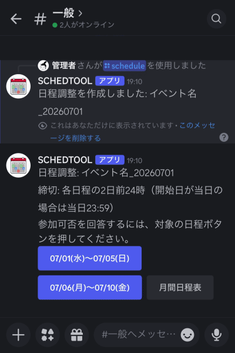

SchedTool
SchedToolは、Discordサーバー内で日程調整、参加可否の集計、開催日通知を行うためのBotです。

日程調整の流れ
- 管理者が最初に
/setupを実行し、通知チャンネル、イベント名、日数を設定します。 - 管理者が
/scheduleで開始日を指定し、日程調整を作成します。 - Botがチャンネルに日程範囲ボタンを表示します。
- 参加者は対象の日程ボタンを押し、自分だけに表示される画面で
◎△×を選びます。 - 通知チャンネルには、日付ごとの参加可能人数と保留者、開催確率が表示されます。
月間日程表ボタンを押すと、押した人だけに全員の入力状況が表示されます。- 締切を過ぎると、対象の日程範囲は自動的に回答できなくなります。
参加者向けの使い方
日程を回答する
チャンネルに表示された日程範囲ボタンを押すと、自分だけに回答画面が表示されます。各日程について、参加可能なら ◎、保留なら △、不参加なら × を押します。
月間日程表を見る
月間日程表 ボタンを押すと、押した人だけに全員の入力状況が表示されます。表示はメンバーごとの固定アイコンで行われます。
自分のアイコンを設定する
/my_icon icon:🍎 のように実行すると、月間日程表で使う自分のアイコンを設定できます。他のメンバーが使用中のアイコンは指定できません。
管理者向けの初期設定
- 最初に
/setupを実行すると、チャンネル選択と入力フォームで初期設定を進められます。 - Discordサーバー内に、日程調整用チャンネルと通知用チャンネルを分けて作っておくと運用しやすくなります。
- 通知用チャンネルを未設定のまま使い始めた場合は、最初に日程調整を作成したチャンネルが通知先になります。
/notification_channel_settingで集計や通知を送るチャンネルを設定します。- 必要に応じて
/participant_role_settingで日程調整の対象ロールを設定します。 /schedule_settingでイベント名と日数を設定します。/reminder_settingで開催日通知のタイミングとコメントを設定します。- 定期的に作成したい場合は
/auto_schedule_startを実行します。
主なスラッシュコマンド
| コマンド | 対象 | 内容 |
|---|---|---|
/setup |
管理者 | 通知チャンネル、イベント名、日数の初期設定を案内します。 |
/schedule_setting |
管理者 | イベント名と1回で調整する日数を設定します。 |
/schedule |
管理者 | 開始日を指定して日程調整を作成します。 |
/auto_schedule_start |
管理者 | 指定したイベント名の最新の日程調整を基準に、次回分から自動作成を開始します。 |
/auto_schedule_stop |
管理者 | 日程調整の自動作成を停止します。 |
/close |
管理者 | 指定したイベントの日程調整を手動で終了します。 |
/delete |
管理者 | 指定したイベントを削除します。 |
/notification_channel_setting |
管理者 | 集計や通知を送るチャンネルを設定します。 |
/participant_role_setting |
管理者 | 日程調整の対象にするロールを設定します。 |
/notification_mention_setting |
管理者 | 開催日通知でメンションするかどうかを設定します。 |
/reminder_setting |
管理者 | 開催日通知のタイミングと一言コメントを設定します。 |
/available_day_reminder_test |
管理者 | 開催日通知の見た目をテスト送信します。 |
/admin_status |
管理者 | Bot設定や未回答者の状況を確認します。 |
/list |
全員 | 作成済みイベントの一覧を実行者だけに表示します。 |
/my_icon |
全員 | 月間日程表で使う自分のアイコンを設定します。 |
通知について
開催日通知は、設定した日時に通知チャンネルへ送信されます。対象者全員が予定を入力済みで、かつ × が1人もいない場合に通知されます。
△ は参加確率50%として扱い、保留者と開催確率を通知に表示します。
通知タイミングやコメントは /reminder_setting で変更できます。